── Conflicts ────────────────────────────────────────── tidyverse_conflicts() ──
✖ ggplot2::%+%() masks psych::%+%()
✖ ggplot2::alpha() masks psych::alpha()
✖ dplyr::filter() masks stats::filter()
✖ dplyr::lag() masks stats::lag()
ℹ Use the conflicted package (<http://conflicted.r-lib.org/>) to force all conflicts to become errors
psych_dat<-readRDS(here::here("raw_data", "psych_pcm.rds"))## Kategorien müssen bei 0 anfangen, 0 wird nämlich als Referenzkategorie oder so genommen?psych_dat<-psych_dat-1## Zu allen characteren liegen Infos vorany(is.na(psych_dat))
[1] FALSE
## Alle kategorien wurden genutzt# alpha(psych_dat)$response.freqpcm_psych<-tam.mml(psych_dat[, -1], irtmodel ="PCM", verbose =FALSE)summary(pcm_psych)
## Identify items with disordered category thresholdsg<-pcm_psych$item_irtgg<-g[g$tau.Cat1>g$tau.Cat2|g$tau.Cat2>g$tau.Cat3|g$tau.Cat3>g$tau.Cat4, ]deltas<-pcm_psych$xsi## Plot the option characteristic curvesplot(pcm_psych, type ="items", export =FALSE, package ="graphics", observed =TRUE, low =-6, high =6)
Iteration in WLE/MLE estimation 1 | Maximal change 2.0474
Iteration in WLE/MLE estimation 2 | Maximal change 1.09
Iteration in WLE/MLE estimation 3 | Maximal change 0.3975
Iteration in WLE/MLE estimation 4 | Maximal change 0.0102
Iteration in WLE/MLE estimation 5 | Maximal change 0.002
Iteration in WLE/MLE estimation 6 | Maximal change 4e-04
Iteration in WLE/MLE estimation 7 | Maximal change 1e-04
----
WLE Reliability= 0.918
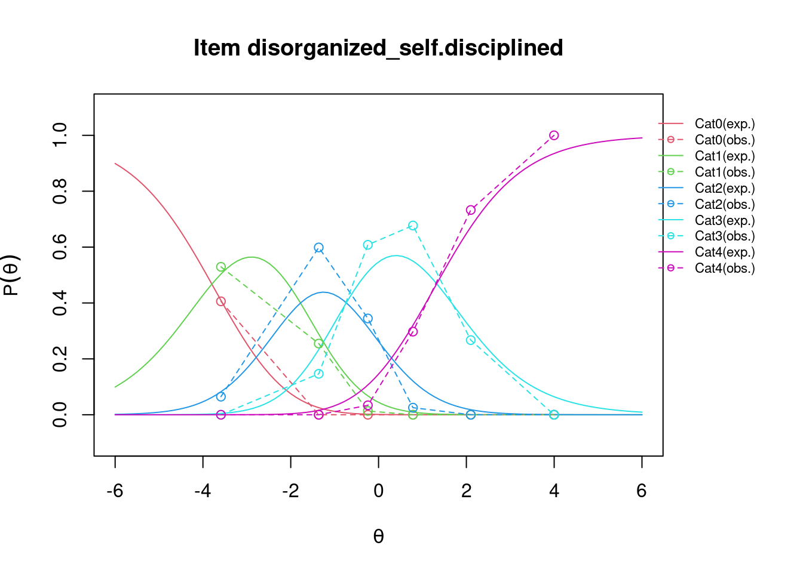
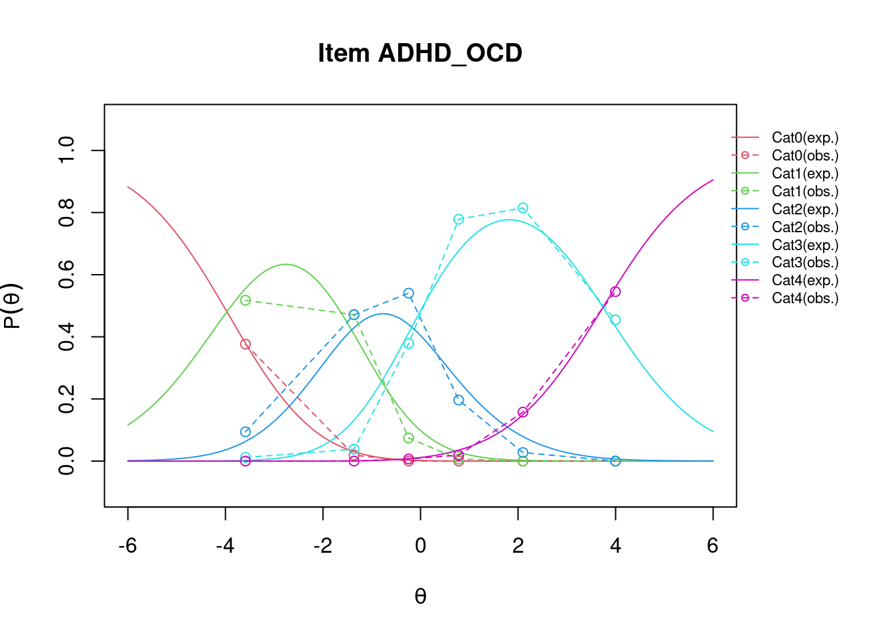
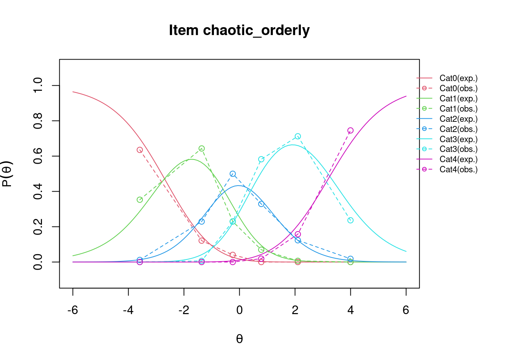
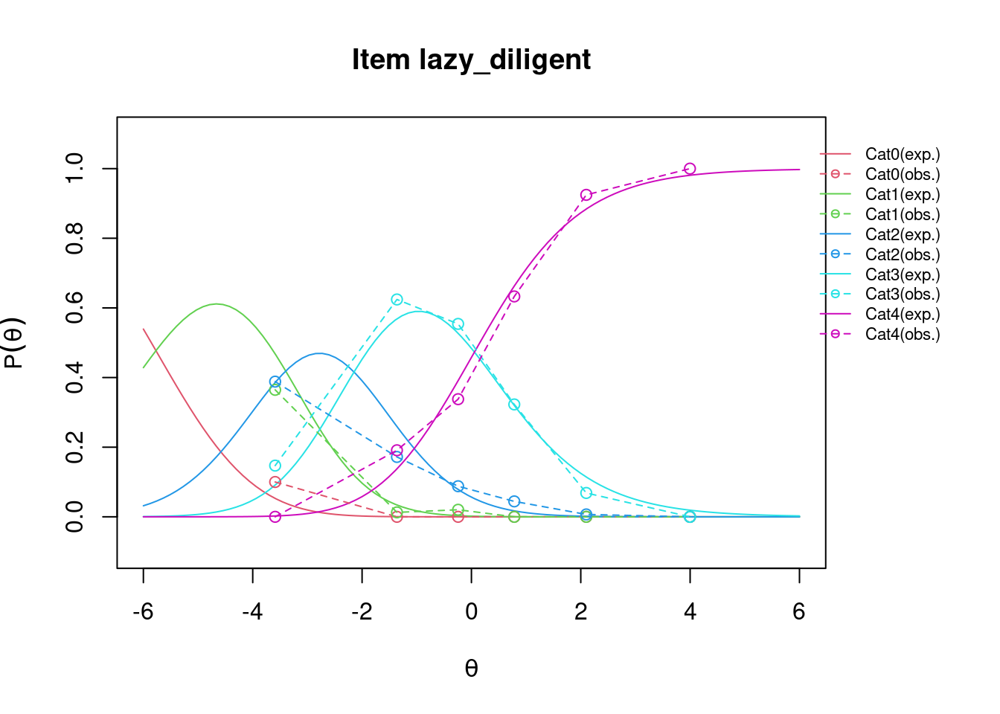
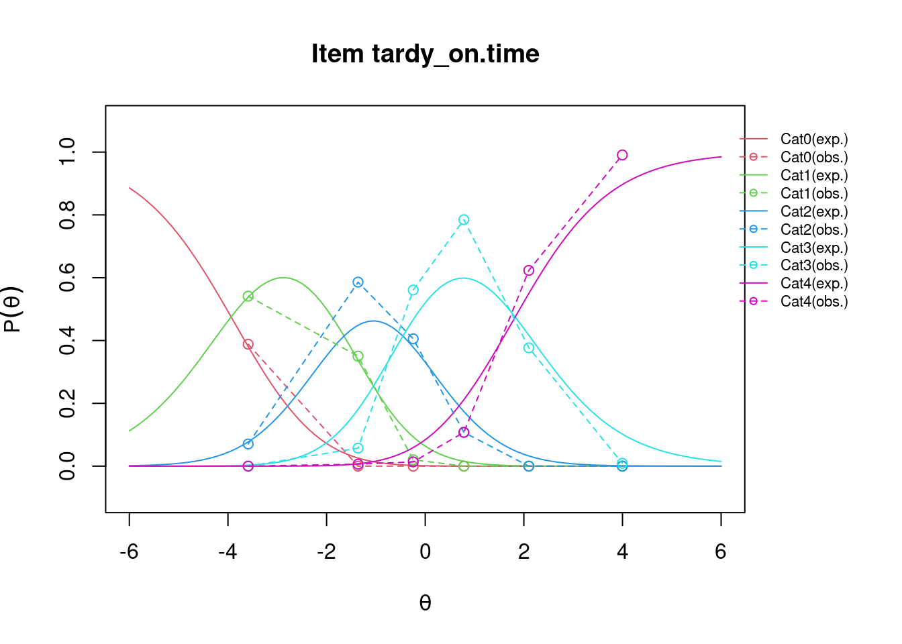
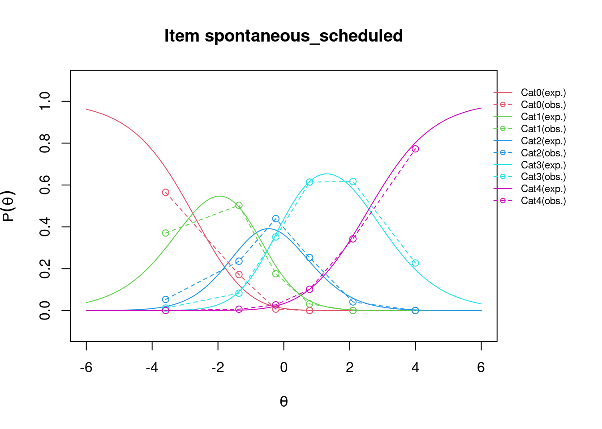
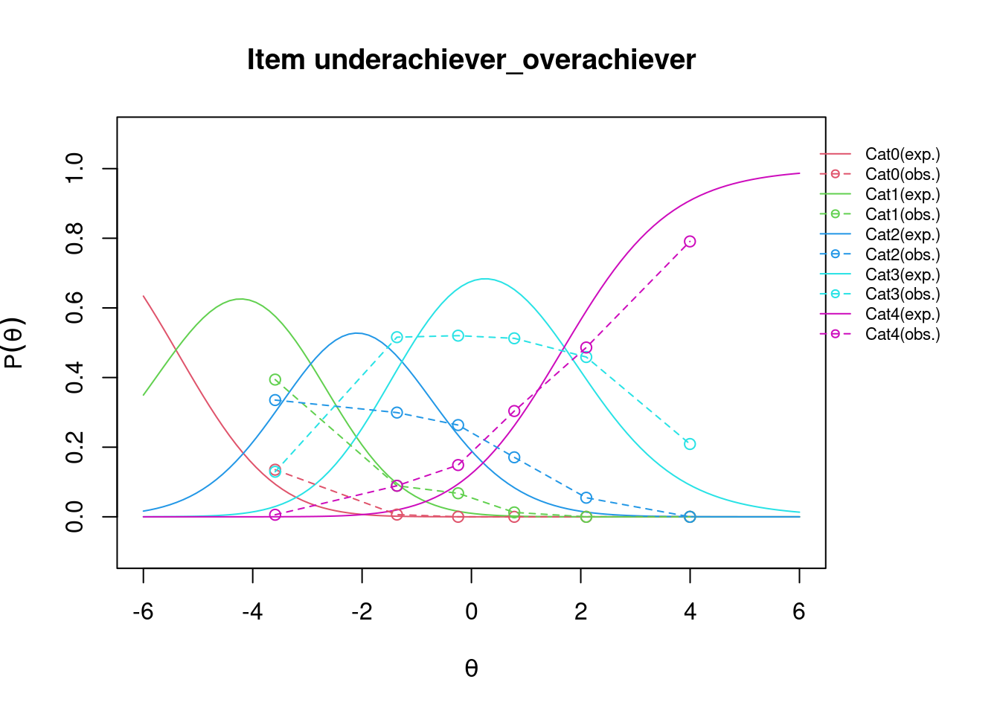
## Gestrichelt sind die Observed Linien. Aber actually not that weird oder? # Was genau sagen die verschiednen Kurven typen?## Plot the empirical and theoretical expected scores curvesplot(pcm_psych, type ="expected", ngroups =6, low =-6, high =6, package ="lattice", overlay =FALSE)
Iteration in WLE/MLE estimation 1 | Maximal change 2.0474
Iteration in WLE/MLE estimation 2 | Maximal change 1.09
Iteration in WLE/MLE estimation 3 | Maximal change 0.3975
Iteration in WLE/MLE estimation 4 | Maximal change 0.0102
Iteration in WLE/MLE estimation 5 | Maximal change 0.002
Iteration in WLE/MLE estimation 6 | Maximal change 4e-04
Iteration in WLE/MLE estimation 7 | Maximal change 1e-04
----
WLE Reliability= 0.918
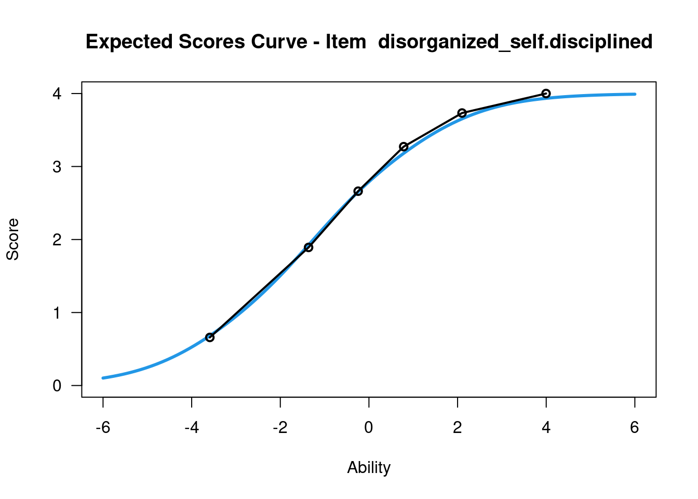
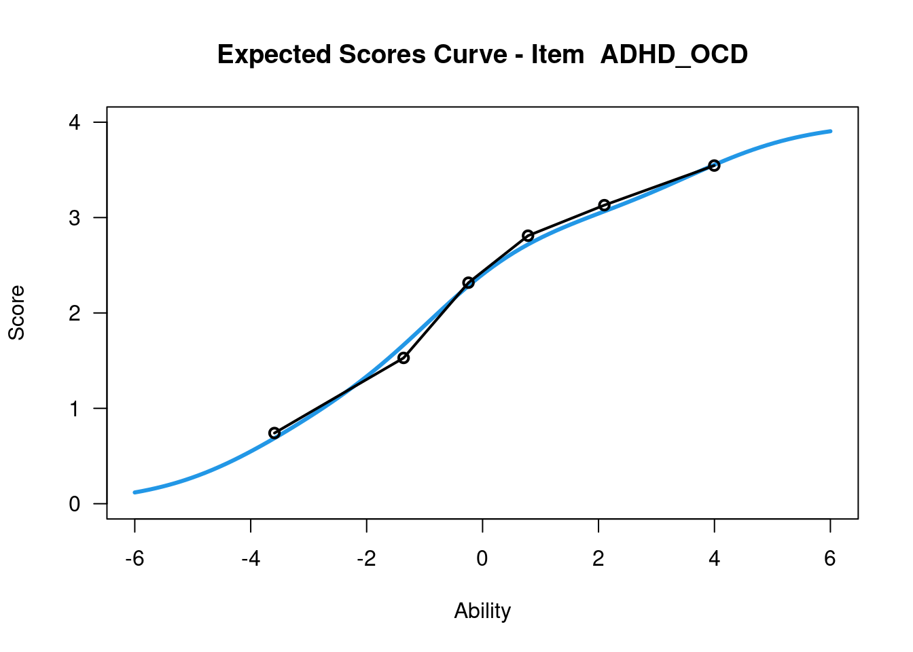
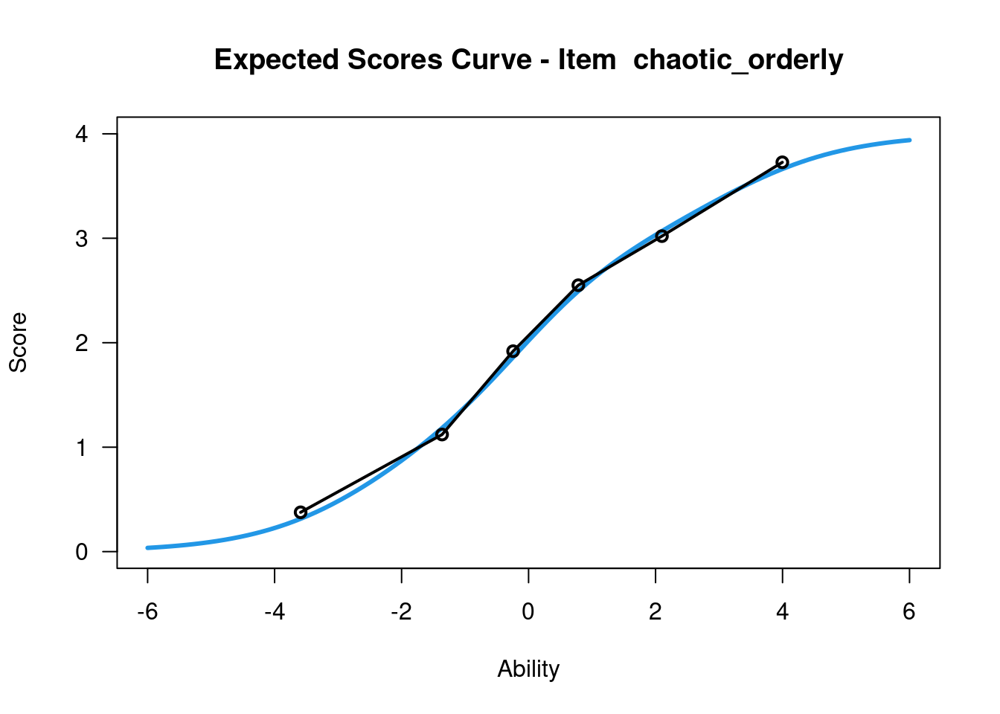
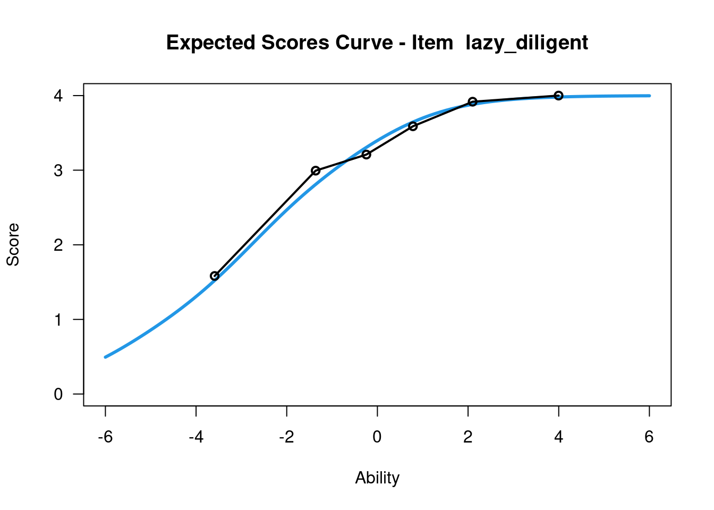
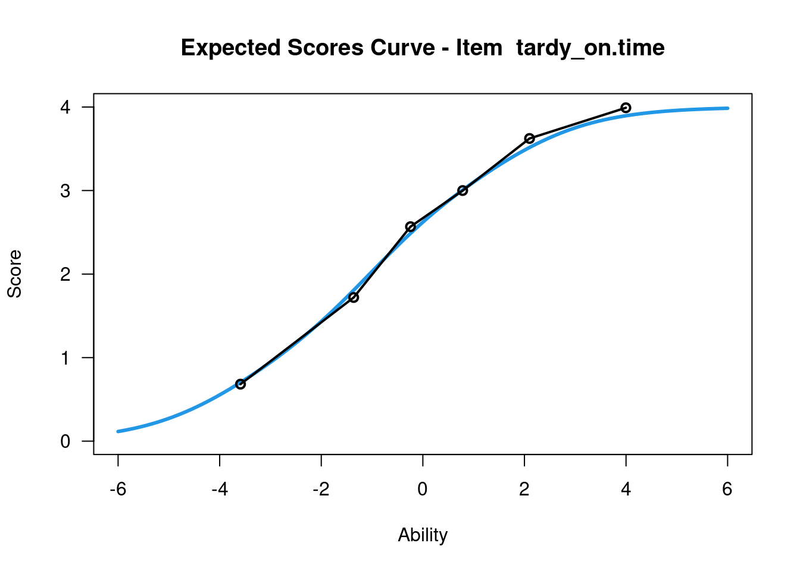
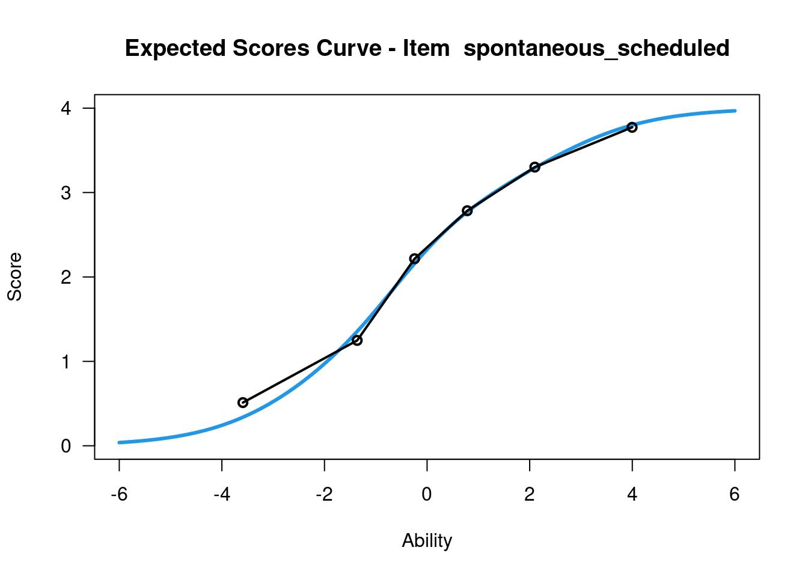
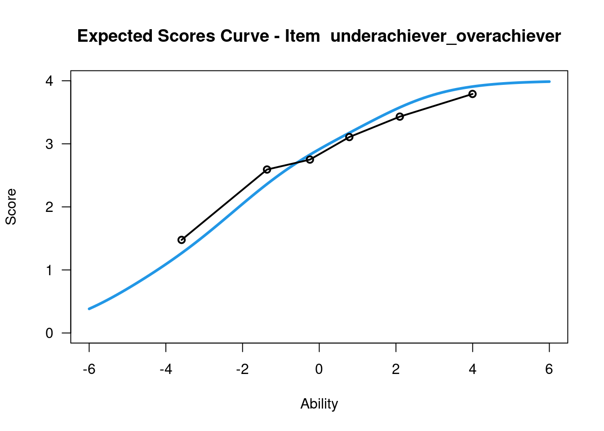
....................................................
Plots exported in png format into folder:
/home/runner/work/IRT_workshop/IRT_workshop/exercises/xPl/Plots
## Infit und Outfit sollten zwischen 0.5 und 1.5 liegen (hatte noch andere Grenzen im Kopf, quelle ruassuchen. Auch was genau das nochmal heißt). ## underachiever_overachiever passt nicht so rein, ist auch thematisch weiter weg (nette Illustration, sieht man das noch an irgendwelchen Kurven oder andern Werten?)## Q3 Statisticq3<-tam.modelfit(pcm_psych)$stat.itempair
q3<-data.frame(q3[1:2], round(q3[5:6], 2), round(q3[7:8], 4))## Actually quite interesting! underachiever_overachiever fällt auch hier auf. ## Gut oder schlecht? zuyymindest sehr ähnlich im example. MADaQ3<-tam.modelfit(pcm_psych)$stat.MADaQ3
## Values > 0.6 might reflect unacceptable fititem.RMSD<-IRT.itemfit(pcm_psych)$RMSD_bc## Tardy_on.time ebenfalls auffällig (auch ein komischer Gegensatz wenn man drüber nachdenkt, evtl. mehrdimensional)## Hiernach kommt noch einiges, aber wahrscheinlich genug to get started!
library(eRm)erm_pcm<-PCM(psych_dat)summary(erm_pcm)plotPImap(erm_pcm)plotICC(erm_pcm, ask =FALSE)## Scheint anders auszusehen als bei Tam. Nochmal genauer schauen später, aber underachiever_overachiever scheint sich hier erst bei vier die letzte Linie zu kreuzen. thresholds(erm_pcm)person.location.estimate<-person.parameter(erm_pcm)item_fit_pcm<-eRm::itemfit(person.location.estimate)## Maybe plot standardiyed residuals?stresid<-item_fit_pcm$st.res# before constructing the plots, find the max & min residuals:max.resid<-ceiling(max(stresid))min.resid<-ceiling(min(stresid))for(item.numberincolnames(stresid)){plot(stresid[, item.number], ylim =c(min.resid, max.resid), main =paste("Standardized Residuals for Item ", item.number, sep =""), ylab ="Standardized Residual", xlab ="Person Index")abline(h =0, col ="blue")abline(h=2, lty =2, col ="red")abline(h=-2, lty =2, col ="red")legend("topright", c("Std. Residual", "Observed = Expected", "+/- 2 SD"), pch =c(1, NA, NA), lty =c(NA, 1, 2), col =c("black", "blue", "red"), cex =.8)}## Looks okay I gues? For Item 8 am schlechtesten, passt auch wieder!